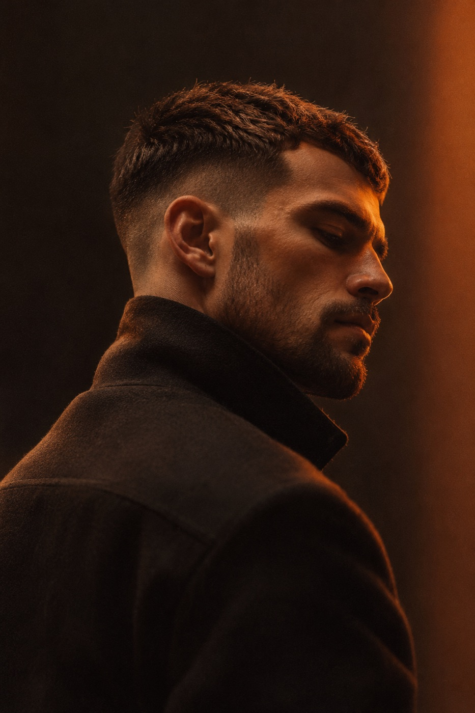

FORM®ОСТАВАЙСЯСОБОЙ.
САЙТ / БАРБЕРШОП
FORM
Запись · Услуги · БотХарактерный сайт с услугами, ценами и демонстрацией записи.
Открыть проектО проекте
ЗАДАЧА
Клиент выбирает услугу и видит цену до записи.
РЕШЕНИЕ
Прайс, запись и демонстрация бота показывают, как может выглядеть путь клиента.